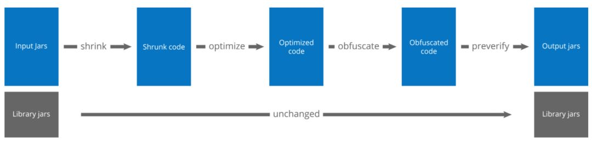
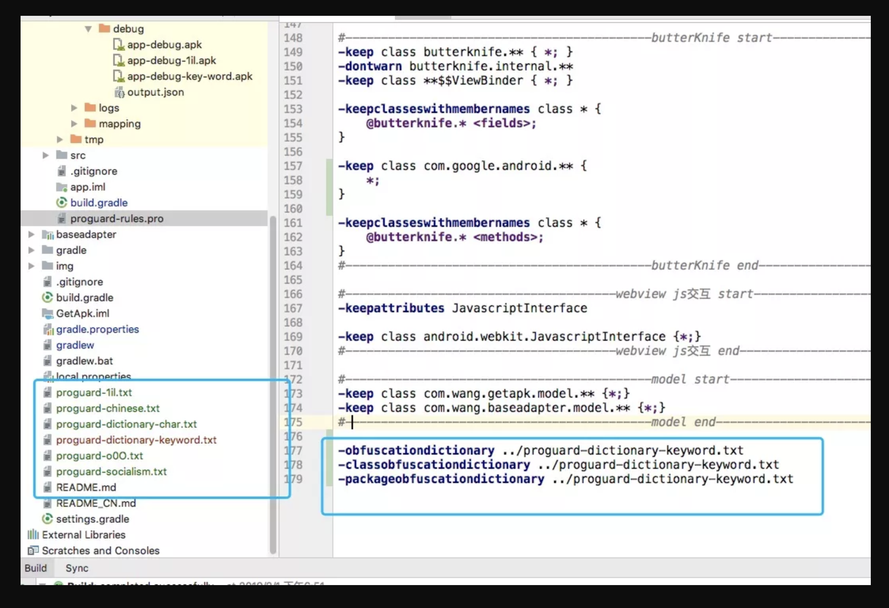

混淆的作用及好处
混淆属于整个应用程序开发生命周期偏后期阶段的技术了，所以要考虑应用的安全性及性能的问题，混淆就是为了这种需求产生的一种技术，简单说，混淆就是将关键字和关键类名，修改为无意义的字符以起到迷惑试图反编译去查看源码的人。在一定程度上能过滤掉一些入门反编译者，混淆是保障Android程序源码安全的第一道门槛，
以上谈了下混淆的作用，而混淆的好处除了能保证源码安全性之外就大概是通过修改关键字为无意义字符串，或者剔除某些辅助类，比如Log，从而减少文件大小。
混淆的原理
Java 是一种跨平台的、解释型语言，Java 源代码编译成中间”字节码”存储于 class 文件中。由于跨平台的需要，Java 字节码中包括了很多源代码信息，如变量名、方法名，并且通过这些名称来访问变量和方法，这些符号带有许多语义信息，很容易被反编译成 Java 源代码。为了防止这种现象，我们可以使用 Java 混淆器对 Java 字节码进行混淆。
混淆就是对发布出去的程序进行重新组织和处理，使得处理后的代码与处理前代码完成相同的功能，而混淆后的代码很难被反编译，即使反编译成功也很难得出程序的真正语义。被混淆过的程序代码，仍然遵照原来的档案格式和指令集，执行结果也与混淆前一样，只是混淆器将代码中的所有变量、函数、类的名称变为简短的英文字母代号，在缺乏相应的函数名和程序注释的况下，即使被反编译，也将难以阅读。同时混淆是不可逆的，在混淆的过程中一些不影响正常运行的信息将永久丢失，这些信息的丢失使程序变得更加难以理解。
混淆器的作用不仅仅是保护代码，它也有精简编译后程序大小的作用。由于以上介绍的缩短变量和函数名以及丢失部分信息的原因， 编译后 jar 文件体积大约能减少25%，这对当前费用较贵的无线网络传输是有一定意义的。
混淆的具体使用
模块(Module)下的build.gradle的配置
1 | android{ |
以上是proguard在模块下build.gradle文件中的配置信息，其中proguard-android.txt为sdk默认的混淆配置，proguard-rules.pro是在默认配置的基础上针对本模块做出的针对性混淆处理。
- proguard-android.txt 这个文件是系统默认混淆文件一般不需要做修改
- 在 debug 版下也可以开启混淆做为测试
- Gradle 2.2 之后，defaultProguardFile 没有使用 SDK 目录下的 proguard-android.txt，而是使用了 gradle 自带的 proguard-android.txt，不同的 gradle 版本带有不同的默认混淆文件，比如在项目根目录的 build/intermediates/proguard-files/proguard-android.txt-2.3.3，即为 gradle 自带的混淆文件。在 proguard-android.txt-2.3.3 文件中也写有说明，Gradle 2.2 之后自带混淆文件
注：proguard-android.txt的位置位于android-sdk/tools/proguard/proguard-android.txt
混淆规则
这个语法的作用是定义出 不需要混淆的源代码，那么编译时会自动将未定义的部分全都混淆。而如下是不需要混淆的
- Android 四大组件
- native方法
- Java 反射用到的类
- 自定义控件
- 枚举类
- JavaBean
- Parcelable、Serializable 序列化类
- WebView 与 JS 交互所用到的类和方法
混淆步骤

proguard分为4个步骤：
- 压缩（shrink）
移除未使用的类、方法、字段等； - 优化（optimize）
优化字节码、简化代码等操作； - 混淆（obfuscate）
使用简短的、无意义的名称重全名类名、方法名、字段等； - 预校验（preverify）
为class添加预校验信息。
混淆基本指令
1 | -dontshrink |
keep配置
1 | # -keep [,modifier,...] class_specification |
- class表示keep类或接口
- interface仅表示keep接口
类名 通配符如下:
| 通配符 | 含义 |
|---|---|
| ? | 匹配单个字符，包名分隔符（.）除外 |
| * | 匹配除（.）外的任意字符 |
| ** | 匹配任意字符（包含.），如com.rush.**匹配com.rush包下的所有类及其所有子包的类。 |
字段和方法 通配符如下：
| 通配符 | 含义 |
|---|---|
<init> |
匹配所有构造方法 |
<fields> |
匹配所有字段 |
<methods> |
匹配所有方法 |
| ? | 匹配单个字符，包名分隔符（.）除外 |
| * | 匹配除（.）外的任意字符 |
类型 通配符如下：
| 通配符 | 含义 |
|---|---|
| % | 匹配原始类型，如int, boolean等 |
| ? | 匹配任意单个字符 |
| * | 匹配除包名分隔符（.）外的任意字符 |
| ** | 匹配任意字符，包括包名分隔符（.） |
| *** | 匹配任意类型（原始类型、非原始类型、数组或非数组类型） |
| … | 匹配任意参数个数，任意参数类型 |
其中类配置完整定义如下，其中[]表示可选：
1 | [@annotationtype] [[!]public|final|abstract|@ ...] [!]interface|class|enum classname |
| 保留 | 防止被移除或重命名 | 防止被重命名（未使用的会被移除） |
|---|---|---|
| 类和类成员 | -keep | -keepnames |
| 仅类成员 | -keepclassmembers | -keepclassmembernames |
| 如类含有某成员，保留类及其成员 | -keepclasseswithmembers | -keepclasseswithmembernames |
更多详细指令
1 | # 代码混淆压缩比，在 0~7 之间 |
混淆日志
1 | # APK 包内所有 class 的内部结构 |
其他自定义混淆规则
1 | # JavaBean 实体类不能混淆，一般会将实体类统一放到一个包下，you.package.path 请改成你自己的项目路径 |
一些不是很常用但比较实用的混淆命令
1 | # 所有重新命名的包都重新打包，并把所有的类移动到所给定的包下面。如果没有指定 packagename，那么所有的类都会被移动到根目录下 |
Android开发常用不需要混淆指令
1 | # Android 四大组件相关 |
proguard配置示例
Android默认推荐配置
在IDE自动生成的project.properties文件中，有这样一行：
1 | #proguard.config=${sdk.dir}/tools/proguard/proguard-android.txt:proguard-project.txt |
Android Studio默认生成的build.gradle文件有如下配置：
1 | buildTypes { |
其中getDefaultProguardFile(‘proguard-android.txt’)获取的也是tools/proguard/proguard-android.txt。
下面看一下这个文件的配置
1 | # 不使用大小写混合类名 |
典型library库的配置
示例引用自官方文档samples:https://www.guardsquare.com/en/products/proguard/manual/examples#library
1 | # 这个配置未弄清楚，待测试 |
一个典型Android App的配置
示例引用自官方文档samples:https://www.guardsquare.com/en/products/proguard/manual/examples#androidapplication
1 | -dontpreverify |
关于反射
并不是所有会被反射引用的类都必须keep，在progurad过程中能直接分析到引用的类会被proguard做相应的处理：
1 | # Class.forName的类名"SomeClass"被混淆后自动替换 |
验证一下：
1 | Class<?> clazz = Class.forName("com.rush.test.SimpleClass1"); |
对以上代码编译并proguard，结果如下：
1 | Class.forName("com.rush.a.a").getDeclaredMethod("Test1", new Class[0]); |
- 通过Class.forName反射的class com.rush.test.SimpleClass1”被自动替换成了”com.rush.a.a”；
- 但通过Class.forName获取的class再去反射方法没有正确处理；
- 通过完整class.getDeclaredField或者getDeclaredMethod反射时能够把字段名和方法名自动替换掉。
从结果看，反射并不是大家想像的那样必须keep，proguard能自动分析到引用的情况都能正确处理。但有些类是在配置文件里配置，或者动态拼接类名反射的，这些情况需要做好keep。
为了问题追踪的方便，建议所有会被反射引用的代码和library public接口都做好keep。
关于proguard配置的一些建议
- 所有会被反射引用的类都做好keep（建议，虽然有些反射能被正确处理）。
如native方法，四大组件，接口model，枚举，序列化类等。 - 只keep必须保留的内容，不要过度keep
- 使用热修复的App，添加-dontoptimize配置
资源混淆
AndResGuard是一个帮助你缩小APK大小的工具，他的原理类似Java Proguard，但是只针对资源。他会将原本冗长的资源路径变短，例如将res/drawable/wechat变为r/d/a。
AndResGuard不涉及编译过程，只需输入一个apk(无论签名与否，debug版，release版均可，在处理过程中会直接将原签名删除)，可得到一个实现资源混淆后的apk(若在配置文件中输入签名信息，可自动重签名并对齐，得到可直接发布的apk)以及对应资源ID的mapping文件。
github:https://github.com/shwenzhang/AndResGuard/blob/master/README.zh-cn.md
丧心病狂的混淆操作
原理：混淆是可以配置词典,原文链接
随便找一个开源项目上手
https://github.com/kingwang666/GetApk
开启混淆
1 | buildTypes { |
可以看到上面配置了混淆文件包含：proguard-rules.pro
和moudule的build.gradle在同一目录，在里面可以添加你的词典配置：

强烈建议，开启混淆后，配置词典前，先打个包运行一下确定可以正常运行。
最后上面的混淆词典，分别来自不同的开源项目：
https://github.com/RockyQu/ProguardDictionary
包含使用Java关键词的词典。
https://github.com/o2e/ProguardDictionaryGenerator
包含最后那个全是非常神奇的字符的。
https://github.com/WrBug/FrenziedProguard
包含1il,中文，0oO的。
放一个混淆后的apk地址，如果实在懒得run又想看看效果：
http://wanandroid.com/blogimgs/57ed3c61-08ee-4a3f-b859-f3cd1d748437.apk
参考链接
https://www.jianshu.com/p/60e82aafcfd0
https://rockycoder.cn/android/2018/03/15/Android-proguard-rules.html
https://juejin.im/post/5ae7edc7f265da0b776f7a95
https://www.imooc.com/learn/879
https://mp.weixin.qq.com/s/BP3SIDaxAy4-5rZYMibpmA
https://www.guardsquare.com/en/proguard/manual/introduction